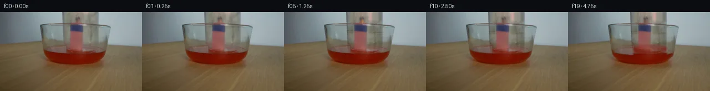
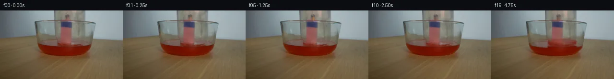
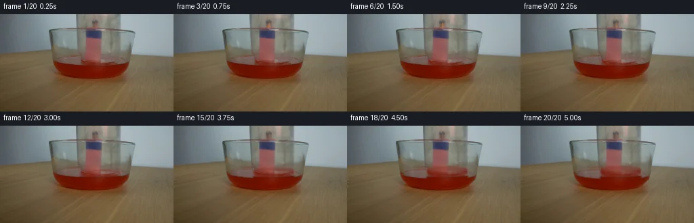
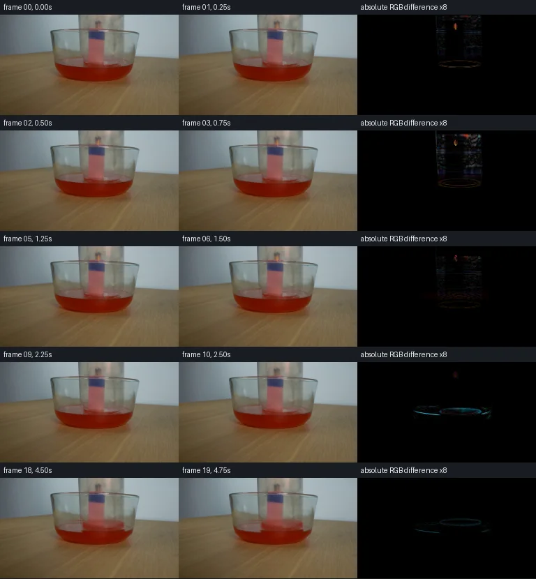

V0 · 初版
2026-11-05T17:52:04.878192+00:00 · RGB 2d7631622e5c
![]()
Observable Generation Trace
把最终像素视频、Harness 冻结的每轮候选、真实工具事件和 Agent 自述放在同一页。可观测证据与模型自述分开标记，避免把“模型说它检查过”误当成真实工具调用。
![首帧]()
Static locked-off single-shot with fixed frame throughout filmed with constant framerate in real-time. The scene shows a realistic scientific demonstration. The scene only contains the described setup and actions. A glass jar gets lowered to cover a bundle of lit matchsticks that are placed in a bowl filled with red liquid.
首帧显示在左侧播放器初始画面。Track 权限、隔离和 tensor 一致性来自 run manifest，而不是 METHOD.md。
默认勾选初版和最终版；可选其他版本一起同步播放。仅检查图更新的连续重复快照已合并，回退旧视频仍保留为一次修订。
Observable events
来源：events.jsonl + run manifest
此 Track 禁止读取输出图片。逐轮预览由外部 Harness 自动冻结，只用于事后审计，生成 Agent 当时看不到这些页面。
Frozen candidates
每张图来自该 round 的真实 00 / 01 / 05 / 10 / 19 帧

pixels a8aa7425d85ea14e · code c1831386a96ddef0
--- previous/generate.py
+++ current/generate.py
@@ -0,0 +1,276 @@
+"""Photographic pixel continuation, using only local NumPy/Pillow/SciPy.
+
+The original photographed scene is the stationary plate. A measured glass
+transmission/reflection residual moves independently of the stationary match
+support. Analytic thin-shell shading, liquid coverage, flame and smoke are
+composited at subpixel coordinates. No renderer or learned model is used.
+"""
+from pathlib import Path
+import json
+import numpy as np
+from PIL import Image, ImageDraw
+from scipy.ndimage import gaussian_filter, map_coordinates
+from artifact_io import save
+
+ROOT = Path(__file__).resolve().parent
+SOURCE = np.asarray(Image.open(ROOT / 'first_frame.png').convert('RGB'))
+H, W = SOURCE.shape[:2]
+PLATE = SOURCE.astype(np.float64)
+Y, X = np.mgrid[:H, :W].astype(float)
+
+
+def smooth(a, b, v):
+ z = np.clip((v-a)/(b-a), 0, 1)
+ return z*z*(3-2*z)
+
+
+def logistic(v, width=0.65):
+ return 1/(1+np.exp(-np.clip(v/width, -40, 40)))
+
+
+def sample(array, y, x=X):
+ if array.ndim == 2:
+ return map_coordinates(array, [y, x], order=1, mode='nearest')
+ return np.stack([map_coordinates(array[..., c], [y, x], order=1,
+ mode='nearest') for c in range(3)], -1)
+
+
+def mix(frame, color, alpha):
+ return frame*(1-alpha[..., None]) + np.asarray(color)*alpha[..., None]
+
+
+def jar_mask(y):
+ left = 112.0 + 0.043*np.minimum(y, 54) + 0.22*np.maximum(y-54, 0)
+ right = 178.0 + 0.012*np.minimum(y, 51) - 0.105*np.maximum(y-51, 0)
+ # The mouth is an ellipse viewed obliquely through the liquid.
+ q = np.clip((X-146.0)/28.8, -1, 1)
+ lower = 69.8 + 5.0*np.sqrt(np.maximum(0, 1-q*q))
+ return logistic(X-left, .42)*logistic(right-X, .42)*logistic(lower-y, .55)
+
+
+# Estimate the background behind the glass from narrow unobstructed strips.
+# This is used only to estimate glass shading, not to replace the photograph.
+outside_l = PLATE[:, 104:110].mean(1)
+outside_r = PLATE[:, 182:188].mean(1)
+u = np.clip((X-107)/78, 0, 1)[..., None]
+BACKGROUND = outside_l[:, None, :]*(1-u) + outside_r[:, None, :]*u
+glass_photo = PLATE.copy()
+# Exclude fixed matches and their blue/red support from the moving residual.
+for row in range(H):
+ if row >= 7:
+ for col in range(125, 153):
+ w = (col-124)/29
+ glass_photo[row, col] = (1-w)*PLATE[row, 124] + w*PLATE[row, 153]
+GLASS_FIELD = gaussian_filter(glass_photo-BACKGROUND, sigma=(.55, .55, 0))
+# Bowl rim and tabletop boundary belong to the fixed plate. Remove their
+# horizontal edges from the estimated reflection field before moving it.
+for start, end in [(19, 29), (50, 58)]:
+ for row in range(start, end):
+ w = (row-start+1)/(end-start+1)
+ GLASS_FIELD[row] = (1-w)*GLASS_FIELD[start-1] + w*GLASS_FIELD[end]
+# Underwater glass is much less visible than the above-water shell. Prevent
+# the original red surface from being mistaken for moving glass reflections.
+for row in range(58, H):
+ GLASS_FIELD[row] = GLASS_FIELD[57] * np.exp(-(row-57)/7.5)
+GLASS_FIELD = np.clip(GLASS_FIELD, -80, 30)
+OLD_MASK = jar_mask(Y)
+OLD_GLASS = GLASS_FIELD*OLD_MASK[..., None]
+subject = (logistic(X-125, .7)*logistic(152-X, .7)*
+ logistic(Y-7, .8)*logistic(71-Y, .8))
+SUBJECT_PROTECTION = 1-.86*subject
+
+
+def mouth_field(offset):
+ # Thin submerged lip. It becomes less visible with increasing depth.
+ q = (X-146)/28.3
+ p = (Y-(69.8+offset))/4.6
+ radius = np.sqrt(q*q+p*p)
… diff truncated; 189 more lines …
pixels 3a2191e3a2f3f2f6 · code e3eb51dbb54b384e
--- previous/generate.py
+++ current/generate.py
@@ -7,6 +7,8 @@
"""
from pathlib import Path
import json
+import sys
+sys.dont_write_bytecode = True
import numpy as np
from PIL import Image, ImageDraw
from scipy.ndimage import gaussian_filter, map_coordinates
@@ -73,6 +75,8 @@
for row in range(58, H):
GLASS_FIELD[row] = GLASS_FIELD[57] * np.exp(-(row-57)/7.5)
GLASS_FIELD = np.clip(GLASS_FIELD, -80, 30)
+GLASS_DIFFUSE = gaussian_filter(GLASS_FIELD, sigma=(5.0, 1.8, 0))
+GLASS_TEXTURE = GLASS_FIELD-GLASS_DIFFUSE
OLD_MASK = jar_mask(Y)
OLD_GLASS = GLASS_FIELD*OLD_MASK[..., None]
subject = (logistic(X-125, .7)*logistic(152-X, .7)*
@@ -138,12 +142,16 @@
frame += outer[..., None]*(moved_outer-PLATE)
sy = Y-d
- moved_field = sample(GLASS_FIELD, sy)
source_bg = sample(BACKGROUND, sy)
# Modulate the source residual with local illumination at the target.
# This stops wall-color reflections from covering submerged red liquid.
illumination = np.clip((BACKGROUND+12)/(source_bg+12), .20, 1.30)
- moved_glass = moved_field*illumination*jar_mask(sy)[..., None]
+ # Broad illumination largely stays registered to the lit environment;
+ # the finer mottled glass texture follows the descending glass.
+ moved_field = (.75*GLASS_DIFFUSE + .2*GLASS_TEXTURE +
+ .25*sample(GLASS_DIFFUSE, sy)*illumination +
+ .8*sample(GLASS_TEXTURE, sy)*illumination)
+ moved_glass = moved_field*jar_mask(sy)[..., None]
difference = (moved_glass-OLD_GLASS)*SUBJECT_PROTECTION[..., None]
frame += difference
frame += mouth_field(d)-OLD_MOUTH
@@ -184,7 +192,7 @@
tint = np.stack([119+3*np.sin((X-119)/12),
30+4*SURFACE_RADIUS,
15+3*SURFACE_RADIUS], -1)
- frame = mix(frame, tint, added*.78)
+ frame = mix(frame, tint, added*.86)
onset = smooth(0, 2.0, rise)
top = (logistic(Y-back, .55)*logistic(front-Y, .65)*INNER_X)
frame = mix(frame, [139, 55, 41], top*onset*.15)
@@ -203,6 +211,10 @@
smooth(62, 66, Y)*(1-smooth(74, 78, Y)))
frame += (wave*mask*envelope)[..., None]*np.array([2.3, 1.1, .6])
+ # Confine tiny soft-mask tails to the measured setup, retaining the
+ # original wall, table and bowl base exactly outside the action region.
+ stationary = (X < 78) | (X > 194) | (Y > 90)
+ frame[stationary] = PLATE[stationary]
return np.uint8(np.clip(np.rint(frame), 0, 255))
pixels 3a2191e3a2f3f2f6 · code e3eb51dbb54b384e
No generate.py text change in this frozen round.
pixels 3a2191e3a2f3f2f6 · code 7706411f67a403a1
--- previous/generate.py
+++ current/generate.py
@@ -6,7 +6,10 @@
composited at subpixel coordinates. No renderer or learned model is used.
"""
from pathlib import Path
+import base64
import json
+import re
+import shutil
import sys
sys.dont_write_bytecode = True
import numpy as np
@@ -239,6 +242,7 @@
packed = np.load(ROOT/'pixels.npz')['pixels']
assert packed.dtype == np.uint32 and packed.shape == (144, 256, 20)
assert np.array_equal(frames[0], SOURCE)
+ assert (ROOT/'frames/00.png').read_bytes() == (ROOT/'first_frame.png').read_bytes()
for i in range(20):
rgb = np.asarray(Image.open(ROOT/'frames'/f'{i:02d}.png'))
assert rgb.shape == (144, 256, 3) and rgb.dtype == np.uint8
@@ -247,6 +251,29 @@
rgb[..., 2].astype(np.uint32))
assert np.array_equal(encoded, packed[..., i]), i
assert np.array_equal(rgb, frames[i]), i
+ assert int(packed.max()) <= 0xFFFFFF
+ # Independently reconstruct the standalone player's frame packets.
+ html = (ROOT/'index.html').read_text()
+ data = json.loads(re.search(r'const DATA=(.*?);\nfunction unpack', html).group(1))
+ decode = lambda s: np.frombuffer(base64.b64decode(s), dtype='<u4').copy()
+ player_frame = decode(data['first'])
+ assert np.array_equal(player_frame, packed[..., 0].reshape(-1))
+ assert len(data['deltas']) == 19 and 'setInterval(' in html and '},250)' in html
+ for i, encoded in enumerate(data['deltas'], 1):
+ packet = decode(encoded)
+ k = 0
+ while k < len(packet):
+ start, count = int(packet[k]), int(packet[k+1])
+ assert 0 <= start < H*W and count > 0 and start+count <= H*W
+ player_frame[start:start+count] = packet[k+2:k+2+count]
+ k += 2+count
+ assert k == len(packet)
+ assert np.array_equal(player_frame, packed[..., i].reshape(-1)), i
+ for name, size in [('inspection.png', (1024, 330)),
+ ('transition_check.png', (768, 830))]:
+ with Image.open(ROOT/name) as sheet:
+ assert sheet.mode == 'RGB' and sheet.size == size
+ sheet.verify()
delta = np.abs(np.diff(frames.astype(float), axis=0))
change = np.any(frames != SOURCE, axis=-1)
positions = np.argwhere(change)
@@ -266,6 +293,7 @@
stats = dict(shape=list(frames.shape), tensor_shape=list(packed.shape),
fps=4, duration_seconds=5,
initial_frame_exact=True, png_tensor_exact=True,
+ initial_png_file_exact=True, html_packet_decode_exact=True,
stationary_exterior_exact=True,
changed_bbox_xyxy=[int(positions[:, 2].min()),
int(positions[:, 1].min()),
@@ -284,5 +312,6 @@
if __name__ == '__main__':
frames = np.stack([render(i) for i in range(20)])
save(frames, ROOT)
+ shutil.copyfile(ROOT/'first_frame.png', ROOT/'frames/00.png')
transition_sheet(frames)
verify(frames)Final visual checks
Harness 保存的最终产物


Agent claims
以下文字由生成 Agent 撰写，不等同于工具证据
The supplied first frame is a 256 × 144 RGB photograph. Measurements below refer to pixel coordinates, with the origin at the upper left. The attached initial image was available visually; its RGB values and gradients were also measured with local Python. Subsequent generated images will be checked only by local code and numerical measurements.
The visible jar mouth starts close to the liquid surface. Lower it by 14 pixels, smoothly, into the bowl. Its upper end remains beyond the image boundary. Keep the matches fixed: only glass reflections, boundary shading, and the submerged mouth move. A small subdued warm flame remains attached to the initial match-tip position, flickers, then dies after the mouth seals. After extinction, a slight pressure reduction draws red liquid upward within the jar. Use a damped approach to a 9-pixel rise, a small volume-conserving outer-level change, faint meniscus ripples, and a brief thin smoke wisp.
The first frame remains byte-for-byte identical to the input. Frame times are 0.00–4.75 seconds, sampled at a constant 4 fps; each holds for 0.25 s, giving a 5-second sequence.
| Frame | Time (s) | Intended event |
|---|---|---|
| 00 | 0.00 | Exact original photograph. |
| 01 | 0.25 | Jar begins descending; very small attached flame flicker. |
| 02 | 0.50 | Glass mouth descends; bundle and bowl remain stationary. |
| 03 | 0.75 | Mouth contacts liquid; faint local disturbance. |
| 04 | 1.00 | Mouth is submerged; descent decelerates. |
| 05 | 1.25 | Jar approaches its resting depth; flame still small. |
| 06 | 1.50 | Jar settles at 14 pixels below its original position. |
| 07 | 1.75 | Sealed-air flame weakens; meniscus begins responding. |
| 08 | 2.00 | Flame shortens and dark match tips become visible. |
| 09 | 2.25 | Last weak warm flicker; liquid starts its measurable rise. |
| 10 | 2.50 | Flame goes out; faint smoke begins rising inside jar. |
| 11 | 2.75 | Internal red surface rises slowly. |
| 12 | 3.00 | Thin smoke spreads and loses opacity. |
| 13 | 3.25 | Surface continues upward; local ripples decay. |
| 14 | 3.50 | Internal/external level difference becomes clear. |
| 15 | 3.75 | Surface rise slows; smoke nearly gone. |
| 16 | 4.00 | Glass and match bundle remain still. |
| 17 | 4.25 | Liquid approaches its new equilibrium. |
| 18 | 4.50 | Almost static settled configuration. |
| 19 | 4.75 | Extinguished matches; raised red liquid inside sealed jar. |
This sequence is generated locally from the supplied photograph with Python, NumPy, Pillow and SciPy. It uses photographic pixel compositing, bilinear resampling, softened analytic masks and simple time-dependent physical responses. It uses no network, additional scene inputs, external model, simulation engine, reference image, or subagent.
The photograph is the fixed plate. A glass reflection/transmission residual is estimated from the observed glass and neighboring background pixels. The match bundle and its blue/red support are excluded from that residual. The bowl rim and tabletop boundary are also suppressed in the moving field. Broad glass illumination follows the jar only partly, while finer texture mostly follows its subpixel downward movement. A thin analytic elliptical lip adds subtle submerged mouth shading. The jar's top stays outside the frame throughout. The glass lowers smoothly by 14 pixels over 1.5 seconds.
Small analytic orange flame shapes are attached to the photographed match tips. Their width and position flicker slightly, then their opacity falls to zero at 2.5 seconds. The original heads darken, followed by a brief low-opacity smoke wisp. The photographed match bundle remains in the same place.
An elliptical red liquid surface rises within the jar following a critically damped response beginning at 2.1 seconds. Added fluid is represented by depth-dependent translucent red coverage and faint curved meniscus shading. The final sampled rise is 8.064 pixels toward a 9-pixel asymptote. A simple horizontal area ratio produces a corresponding 3.342-pixel outside level drop. The outside surface is locally resampled within the fixed bowl; small contact ripples decay after the jar seals. These are approximate image-space physical effects, rather than a complete thermodynamic or fluid simulation.
The initial PNG is copied exactly into frames/00.png. The other frames
retain the original wall, table and bowl base pixels outside the action
region. No camera motion, hand, or extra apparatus is generated.
generate.py: deterministic generator and validation routines.pixels.npz: pixels, a uint32 array of shape (144, 256, 20), encoding
RGB as 0xRRGGBB.frames/00.png through frames/19.png: twenty RGB frames, 256 × 144.inspection.png: eight selected frames in the supplied contact-sheet format.transition_check.png: five before/after pairs and absolute RGB differences
amplified eight times. This is a generated diagnostic, not visual review.index.html: standalone pixel player, using 250 ms frame holds for 4 fps.OBSERVATION.md: measurements and the event plan written before coding.verification.json: exactness checks, motion statistics and modeled states.Sampling times are 0.00–4.75 seconds. Twenty 0.25-second holds give a total duration of 5 seconds. The supplied player/contact-sheet labels show the end of each frame's hold interval, 0.25–5.00 seconds.
Generated outputs were inspected only through local code and numerical checks. No generated image was opened with an image Read/View tool, and no visual review of the generated sequence is claimed.
The first pass showed soft-mask rounding changes beyond the chosen liquid boundary. Those tails were confined to the measured action region. The glass field was also separated into broad illumination and fine texture to reduce excessive reflection changes during descent. Outputs were regenerated.
Final checks establish:
0xRRGGBB tensor slices.Reproduce with PYTHONDONTWRITEBYTECODE=1 python generate.py from this workspace.